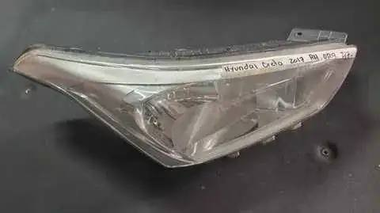
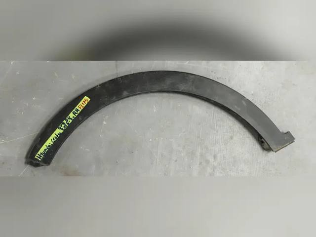
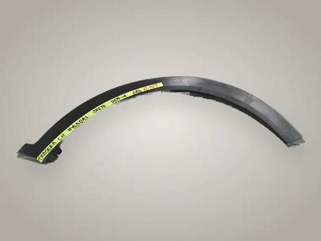
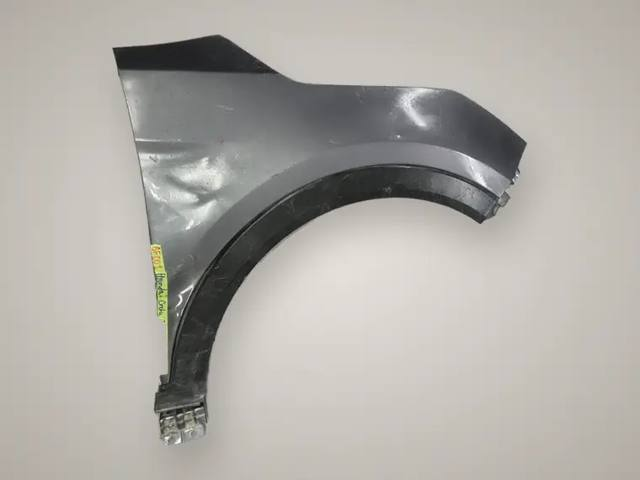
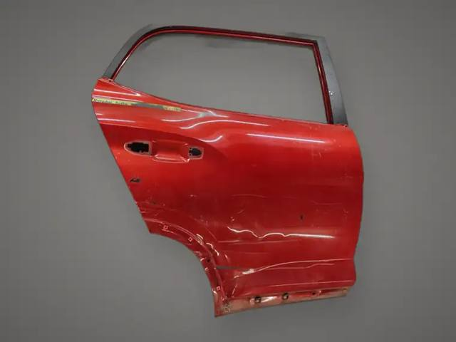
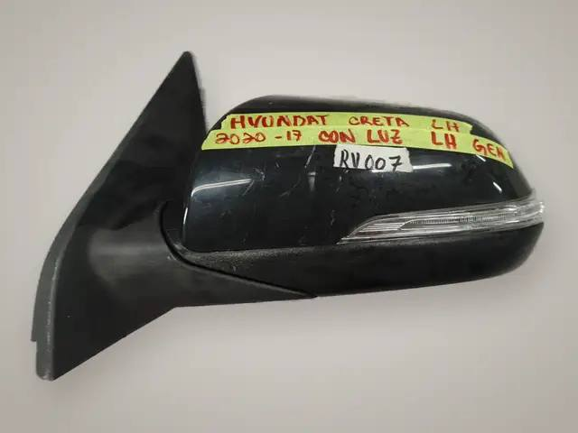

Piezas de carrocería para Hyundai Creta
37 piezas disponibles hoy para Hyundai Creta, cada una con su foto y su código: faros y lámparas delanteras (4), flares (4), guardafangos (4), halógenas y faros antiniebla (4). Dinos el año de tu carro y te confirmamos si le sirve.
- Garantía de 3 días
- Foto real de cada pieza
- Efectivo, Yappy o ACH
- Lunes a sábado, 8:00 a. m. a 5:00 p. m.
Faros y lámparas delanteras para Hyundai Creta 4
 030Creta2016-19 · lado derecho · genérico
030Creta2016-19 · lado derecho · genérico 033Creta2016-19 · lado izquierdo · original
033Creta2016-19 · lado izquierdo · original
217Creta2016-19 · lado derecho · original LD015Creta2016-19 · lado derecho · genérico
LD015Creta2016-19 · lado derecho · genéricoFlares para Hyundai Creta 4
 FL028Creta2017-20 · lado izquierdo · original
FL028Creta2017-20 · lado izquierdo · original
FL175Creta2016-20 · lado derecho · original FL178Creta2016-20 · lado derecho · original
FL178Creta2016-20 · lado derecho · original
FL183Creta2014-19 · lado izquierdo · originalGuardafangos para Hyundai Creta 4

GF001Creta2015-2018 · lado derecho · original GF007Creta2021-2024 · lado izquierdo · original
GF007Creta2021-2024 · lado izquierdo · original GF016Creta2018-2020 · lado izquierdo · original
GF016Creta2018-2020 · lado izquierdo · original GF022Creta2015-17 · lado derecho · genérico nuevo
GF022Creta2015-17 · lado derecho · genérico nuevoHalógenas y faros antiniebla para Hyundai Creta 4
 HA005Creta2016-18 · lado izquierdo · original nuevo
HA005Creta2016-18 · lado izquierdo · original nuevo HA006Creta2016-19 · lado derecho
HA006Creta2016-19 · lado derecho HA054Creta2014-18 · lado izquierdo
HA054Creta2014-18 · lado izquierdo HA068Creta2021-23 · lado derecho · original
HA068Creta2021-23 · lado derecho · originalDefensas traseras para Hyundai Creta 3
 DT054Creta
DT054Creta DT242Creta
DT242CretaPuertas para Hyundai Creta 3

PT024Creta2021-26 · lado derecho · original PT020Creta2015-20 · lado derecho · original
PT020Creta2015-20 · lado derecho · original PT019Creta2015-20 · lado izquierdo · original
PT019Creta2015-20 · lado izquierdo · originalParrillas para Hyundai Creta 2
 444Creta
444Creta 466Creta
466CretaCopas para Hyundai Creta 2
 732Creta
732Creta 733Creta
733CretaDefensas delanteras para Hyundai Creta 2
 812Creta
812CretaRetrovisores para Hyundai Creta 2

RV007Creta2017-20 · lado izquierdo · genérico RV028Creta2015-19 · lado derecho · original
RV028Creta2015-19 · lado derecho · original TM010Creta
TM010Creta 249Creta
249Creta DTI010Creta
DTI010Creta R045Creta
R045Creta PCh001Creta
PCh001Creta